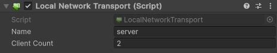
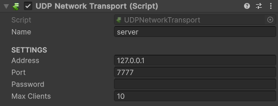

Network Transport
The NetworkTransport is a base class used to define how communication between network endpoints will be handled. You can implement your own transport to support any kind of connection protocol you desire, such as Bluetooth, etc...
1 2 3 4 5 6 7 8 9 10 11 12 13 14 15 16 17 18 19 20 21 22 23 24 25 26 27 | |
Local
The LocalNetworkTransport is the most basic network transport method. With local network transport, you can add support for split-screen mode without any additional coding required (just manage player input separately): each action will be seamlessly handled, even locally.

UDP
UDP (User Datagram Protocol) is the primary gaming network protocol, thus it's the basic internet-based protocol supported. Currently, UDP connection is established using the LiteNetLib library, which provides custom reliability systems that fit our gaming needs perfectly.

In the UDPNetworkTransport component, you can set the host/remote address, host/remote port, connection password, and maximum server client limit.